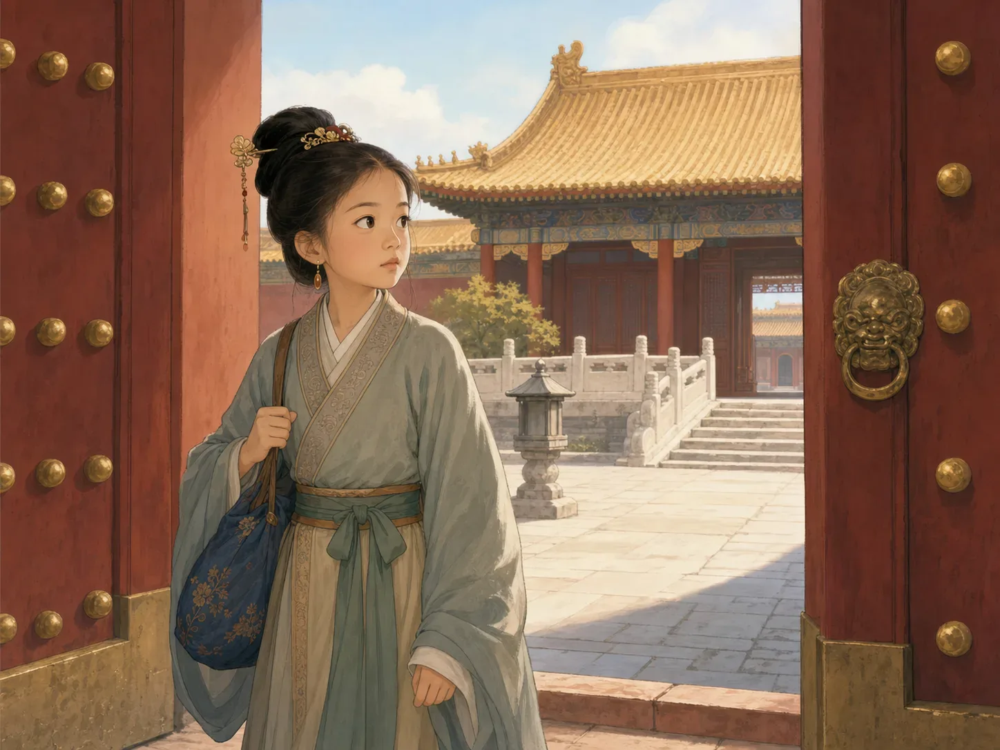
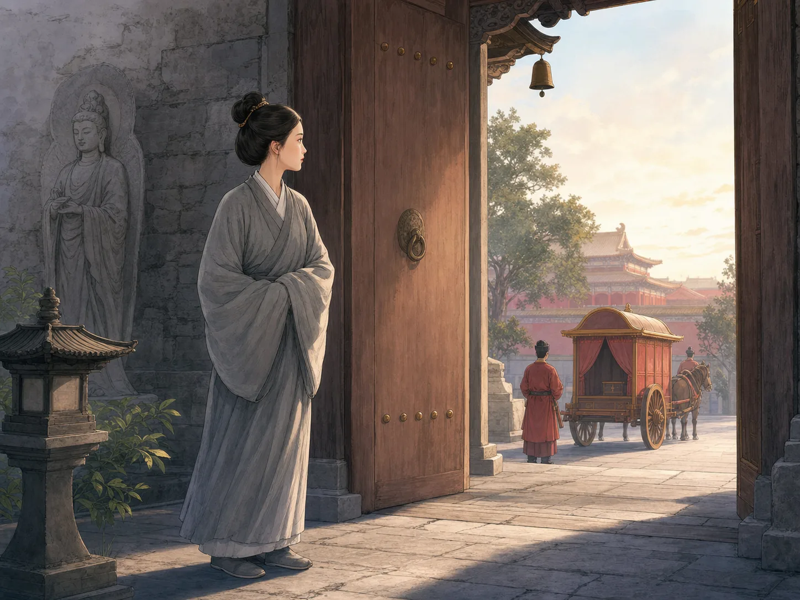
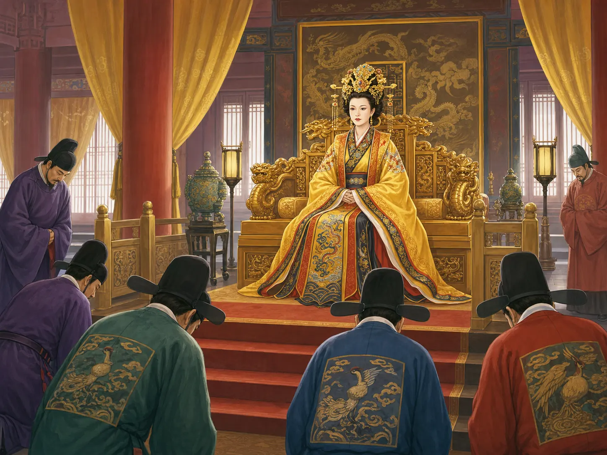

武则天：中国唯一的女皇帝
Wu Zetian: China's Only Woman Emperor
Page 1
一个走进皇宫的女孩
A Girl Walks into the Palace

When fourteen-year-old Wu Zetian first entered the palace, she was only a very young girl. But she watched closely and learned quickly.
很久以前，一个十四岁的女孩走进了皇宫，她叫武则天。
刚开始的时候，她并不是宫里最显眼的人。
可是她一直在认真看、认真学，慢慢明白朝廷是怎么运转的。
这些经验后来都变成了她很重要的力量。
Long ago, a fourteen-year-old girl entered the imperial palace. Her name was Wu Zetian.
At first, she was not the most important person there.
But she watched carefully and learned how the court worked.
Later, that knowledge became one of her greatest strengths.
Page 2
她又回来了
She Came Back

She spent time in a temple, but her story did not end there. Later, step by step, she returned to the center of power.
后来，武则天一度离开皇宫，去了寺院。
可是她的故事并没有结束。
她后来又回到了宫里，而且地位越来越高。
慢慢地，越来越多的人发现，她不只是聪明，而且很会处理大事。
Later, Wu Zetian left the palace for a time and was sent to a temple.
But her story did not end there.
She returned to the palace, and her position rose higher and higher.
Little by little, more people saw that she was not only clever, but also very skilled at handling serious matters.
Page 3
她真的当上了皇帝
She Really Became Emperor

In the end, Wu Zetian truly took the emperor's throne. In Chinese history, that was both rare and unforgettable.
后来，武则天一步一步掌握了更多权力。
最后，她正式称帝。
在中国历史上，她是唯一一位正式坐上皇帝位置的女性。
光这一点，就已经让很多人一直记得她。
Later, Wu Zetian gained more and more power.
At last, she officially became emperor.
In Chinese history, she is the only woman who formally took the emperor's throne.
That fact alone is one reason so many people still remember her.
Page 4
为什么她这么特别？
Why Was She So Unusual?
武则天特别的地方，不只是她是女人。
更重要的是，她真的管过这个很大的国家。
她重视考试，也愿意给更多有本事的人机会。
当然，她的一生里也有很多争议，所以后人一直在讨论她到底是一个怎样的统治者。
Wu Zetian is not special only because she was a woman.
More importantly, she truly ruled a very large empire.
She valued the exam system and was willing to give chances to more capable people.
Of course, her life also carried many arguments, so later generations kept debating what kind of ruler she really was.
一个一直让人回头再想的人
A Ruler People Keep Thinking About
武则天的故事里有胆子、有本事，也有很多争议。
可是有一件事谁也改不了：她真的当过皇帝。
这就是为什么她在中国历史上一直那么特别。
Wu Zetian's story has courage, political skill, and many arguments.
But one thing cannot be changed: she really was emperor.
That is why she remains such a striking figure in Chinese history.